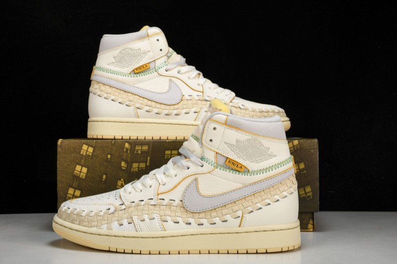

{kind=link}

Jordan 1 Retro High OG SP
Совместная работа Air Jordan 1 Retro High OG SP между Union LA, Bephie’s Beauty Supply и Jordan Brand предлагает свежий взгляд на классический силуэт.
Добавить в корзину 22 990 ₽
Верх из белой кожи с открытой строчкой зеленой тканой отделкой, вдохновленной Nike Air Footscape Woven, и серым логотипом Swoosh. Традиционные линии обуви подчеркнуты желтой окантовкой, сочетаются со шнурками и сдержанной этикеткой «UN/LA» на боковой щиколотке. Брендинг проявляется в тональном логотипе Wings на клапане воротника и тканой бирке Nike Air на язычке. Под ногами прочная резиновая подошва с винтажной пожелтевшей отделкой, добавляющая ретро-атмосферы.
- Цветовая гамма: волчий серый/муслин/бледно-ванильный/кинетический зеленый/университетское золото
- Верх выполнен из мятой кожи винтажного кремового оттенка с необработанным кожаным краем
- Шнурки в тон соответствуют винтажному образу, а язычок выше выполнен в сером цвете
- Дополнительные детали зеленой строчки обрамляют край и аббревиатуру Bephies Beauty Supply на квадратной нашивке на пятке
- Дата выпуска: 24.08.23